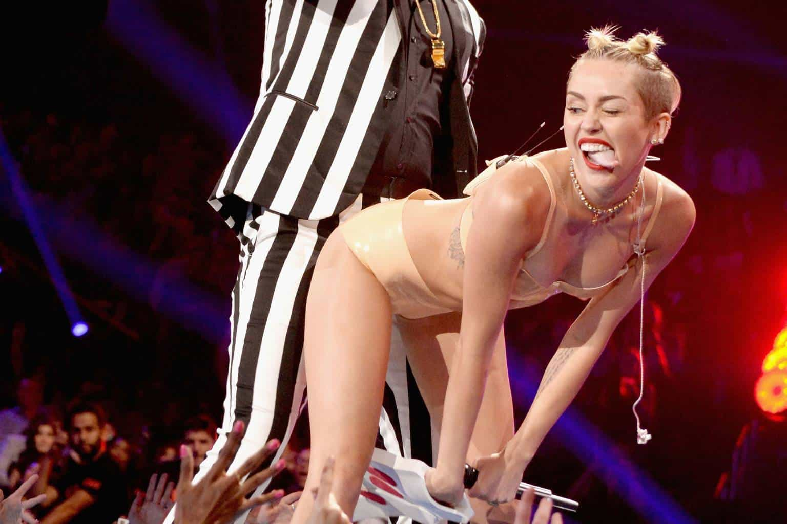

There are many things in the past that we have forgotten about. Some of those things were seen as superstitious, controlling, or even inhumane. One of those dark arts is slut shaming. Although it is still around, it is not nearly as strong as it used to be, and the reasoning why it is necessary has escaped our understanding.

An Easy Target
Let me start off with a personal story before I address what needs to be said. I remember a few semesters ago, I was walking over to one of my friends’ apartments to do some drinking before we went out and hit up the bars.
On the other side of the street from where I was walking, I noticed a very attractive girl in a red dress that was held up by spaghetti strings. The dress didn’t go past her knees. Her hair was dyed bleach blonde and looked like it was fixed by a professional porn star hairdresser.
The most noticeable thing about her was the fact she wasn’t wearing a coat. It was a freezing night in late November and she was alone. Although I was too far away to see her face, her body language told me everything: she wasn’t a prostitute, she was cold, and she was deeply confused.
I was already running late to the party and I didn’t know her or her situation, so I decided to keep on walking. However, her story doesn’t end here.
I was my buddy’s apartment, which was extremely nice since his parents could afford it. At the last minute, his neighbors started to throw a party as well and the bar-hopping plan was called off. Random people were coming in and out. About an hour into the party, I saw that same girl show up.
I talked to her briefly and learned that she was a freshman at my college and didn’t know anybody. She came from a different state and was trying to meet people. I introduced her to my group of friends and we all began to do some shots, beer bongs, hookah, etc. It was a full blown party at this point.
After hours of heavy drinking, it was getting close to the morning hours, as people were now just leaving. My buddy let me crash in his spare bedroom that was right across from his. I slept in my clothes only for a few hours as it was already early in the morning.
I was still drunk as I crept out of the bedroom and saw that his door was wide open. To my surprise, I saw him with the same girl from earlier and another guy.
My buddy looked over at me half-asleep, half-drunk, and gave me the thumbs up and said I would see him in class on Monday. Looking back and reflecting her situation, I saw the red flags that she was signaling and it all boils down to this: she was easy prey.
A Woman’s Greatest Fear
So what exactly is the end goal of slut shaming? If you speak to one of those fat queer feminists, they will tell you that it is merely a patriarchal construct to control women. Reality will tell you that it tries to keep women from making mistakes, like the woman in my story, who would have been categorized as a rape victim by today’s standards.
What women love most is attention, and from there we can understand their greatest fear: ostracism. Ostracism is the end result from shaming. The stronger the culture of slut-shaming, the greater the number of women who will fear being ostracized from their family and friends. They are not creatures who can withstand isolation, or can even comprehend how therapeutic solitude can be. The stronger the stigma is for being a slut or an attention whore, the more fearful they will be walking down this path.
If the woman in my story had more fear of being promiscuous, she wouldn’t have had a train run on her by a couple of strangers. If more women in general would listen to the shaming messages that they receive, they wouldn’t have to take the morning walk of shame when they go back to their apartment.
The solution of de-stigmatizing sluttiness that feminists push ignores what men want in a woman: a loyal companionship. The feminist solution to solve this problem is—and has been—to shame men into accepting sluttiness in women, and now, more and more men are beginning to accept the idea of being in an open relationship, turning them into cucks.
Keeping Them Hoes In Check
So how do you go about keeping a woman in line without slapping her with the back of your hand? First, you need to examine the girl if she is even worth the time or the effort. If she is too far gone, then you will be fighting a lost cause, my friend.
If she has not displayed any thotness thus far, has a good father, and dresses like a proper woman, then there may be a small light at the end of the tunnel for her. It is best to get her before the gargoyles that call themselves feminists beat you to it.
Women have an ability to pick up on subtle cues that tip them off on what the other person is thinking. Walking up to her and preaching will get you nowhere fast and will most likely damage the relationship. Whenever an opportunity arrives, giving out small answers that point out the degeneracy of the hook-up culture will affect her much more than a long speech.
This approach is as impromptu as it gets. I have done it a couple of times with some of my friends’ girlfriends (all exes now), so let me provide an example so you can get a general idea.
My buddies and I were all studying together and going off-topic periodically. A couple of hours went by and one of the men brought up how a girl he knew was in her fourth relationship within a three-week time frame. The girlfriends immediately began to defend her, saying that dating was hard and it was difficult to find the right guy.
After everybody had their opinion thrown in on the situation, I went towards the opposite direction of where everyone was. “Maybe she just doesn’t want a relationship? Maybe she just wants casual flings?” It was well-known that she was a woman that got around at school. Her history showed that I was right, and today I am still right about her.
But that didn’t make the study group any less awkward. Even though I wasn’t harsh and I was choosing my words carefully, the tension rose, especially with the girls. The next day, one of my friends told me that his girlfriend doesn’t want me hanging out with him anymore. They broke up the next week.
Discouraging this degenerate culture will be difficult and you will more than likely mess up on many occasions and lose friends. But you know as well as I do that this behavior in our society is a sickness that needs to be discouraged.
I wish you luck on the thot patrol. Godspeed.
Read More: Women Are Responsible For Slut Shaming